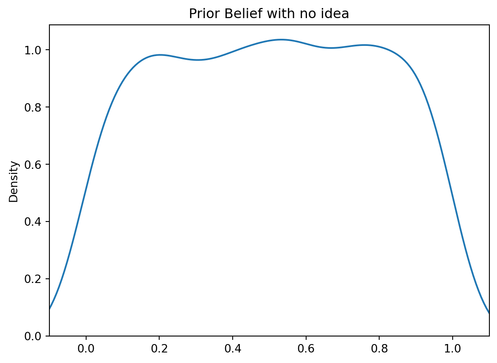
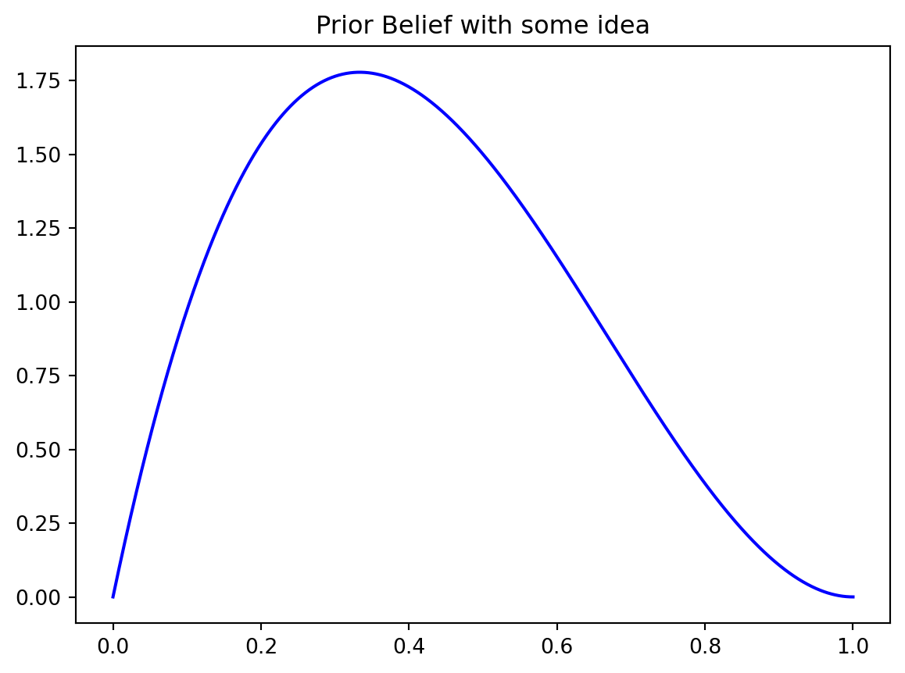
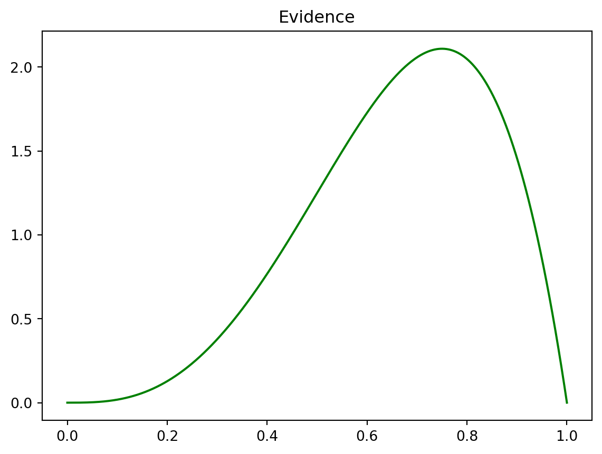
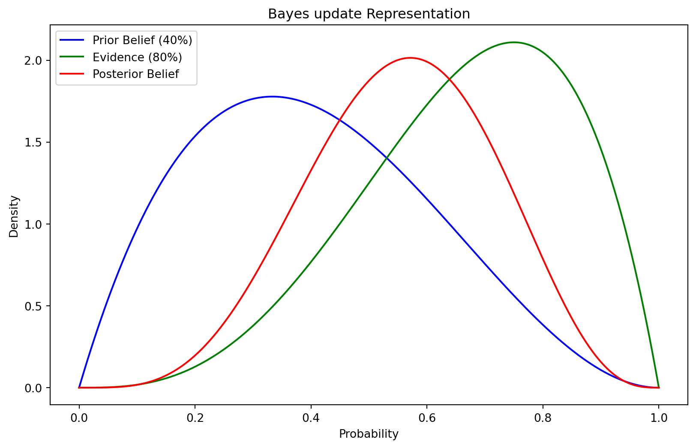
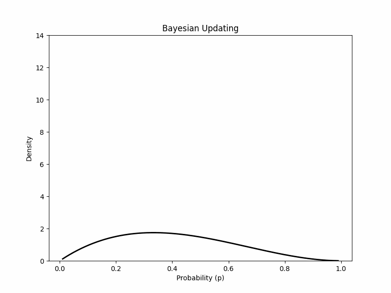

To elucidate the workings of Bayesian updating, I often find it helpful to draw parallels from everyday experiences. Previously, I’ve used examples like my dog and my first date with my girlfriend. This time, let’s delve into the concept using a job interview scenario.
The job interview😎
Imagine you’ve landed a job interview – you’re simultaneously excited and apprehensive. As you stand at the threshold, you’re completely uncertain about what awaits you inside. You don’t know who the interviewers are, what to expect, or how the interview will unfold. The odds of everything going either terribly wrong or wonderfully right seem equally plausible.
In the realm of probability, we can liken your state of mind to a uniform distribution, where all outcomes are equally probable. This state of not knowing what will happen or how the interview will conclude is what Bayesian terminology dubs the “prior belief” – it’s the starting point for your assessment.

Beliefs💬
Interestingly, we still call it a “prior belief” even if you harbor some inkling about how the interview might unfold. For instance, let’s say you had an unpleasant preliminary conversation with the company, and as you enter the room, you’re not filled with optimism, estimating a 40% chance of success. In Bayesian terms, this, too, can be translated into probabilities.

Keep in mind, though, that this assessment is occurring just as you’re about to step through the door.
Smile😁
Now, envision yourself crossing that threshold, and the interviewers pose their initial question. Your response is swift, and you notice a confident smile on the interviewer’s face. This moment represents a pivotal piece of new information drawn from your real-time experience, and naturally, you’ll use it to revise your initial belief about the interview’s outcome. We call this new information and “evidence”.
What’s happening inside your mind, that surge of heightened confidence, can once again be translated into numerical probabilities to update your initial belief. This is precisely where the Bayes comes into play.
Let’s show how the update takes place. Let’s assign to that smile, the evidence, a probability of 80% to pass the interview.

Update🔀
Now, let’s plug in all the information we have in the Bayesian therm we all know. We started with a not so confident prior belief (40% chance of success), then we got a new smiling evidence (80% chance of success). From here we can combine these two information and calculate our updated beliefs or as we call them “posterior beliefs”.

As you can see, now you have around 60% of passing the interview. These process can keep on going with every new information you collect during the interview as in this gif.

In essence, this is the core of Bayesian updating. It allows you to adapt your beliefs based on new information as you progress through an uncertain situation, much like navigating the twists and turns of a job interview.
Code
import numpy as npimport matplotlib.pyplot as pltimport seaborn as snsimport scipy.stats as stats#make this example reproducible.np.random.seed(1)dataUni = np.random.uniform(size=1000)sns.kdeplot(dataUni)# Adjust x-axis limits to show the tailsplt.xlim(-0.1, 1.1)plt.title('Prior Belief with no idea')# Show the plot#plt.show()########################################################### Define the parameters for the prior belief and evidenceprior_prob =0.4# Create a range of values for the probability (x-axis)x = np.linspace(0, 1, 1000)# Calculate the prior probability distribution (prior belief)prior_distribution = stats.beta.pdf(x, 2, 3) # Beta distribution parameters (2, 3)sns.lineplot(x=x, y=prior_distribution,color="blue")plt.title('Prior Belief with some idea')# Show the plot#plt.show()evidence_prob =0.8# Create a range of values for the probability (x-axis)x = np.linspace(0, 1, 1000)evidence_distribution = stats.beta.pdf(x, 4, 2) # Beta distribution parameters (4, 2)sns.lineplot(x=x, y=evidence_distribution, color='green')plt.title('Evidence')# Show the plot#plt.show()########################################################## Create a range of values for the probability (x-axis)x = np.linspace(0, 1, 1000)# Calculate the prior probability distribution (prior belief)prior_distribution = stats.beta.pdf(x, 2, 3) # Beta distribution parameters (2, 3)# Calculate the evidence (as a Beta distribution with parameters based on evidence probability)evidence_distribution = stats.beta.pdf(x, 4, 2) # Beta distribution parameters (4, 2)# Calculate the posterior probability distribution (updated belief)posterior_distribution = prior_distribution * evidence_distribution# Create a Seaborn plotplt.figure(figsize=(10, 6))sns.lineplot(x=x, y=prior_distribution, label='Prior Belief (40%)', color='blue')sns.lineplot(x=x, y=evidence_distribution, label='Evidence (80%)', color='green')sns.lineplot(x=x, y=posterior_distribution, label='Posterior Belief', color='red')# Customize the plotplt.title('Bayes update Representation')plt.xlabel('Probability')plt.ylabel('Density')plt.legend()#plt.show()